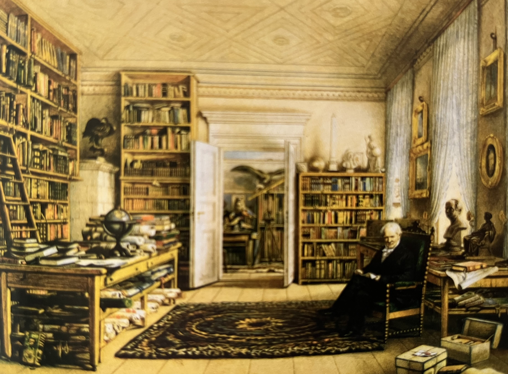
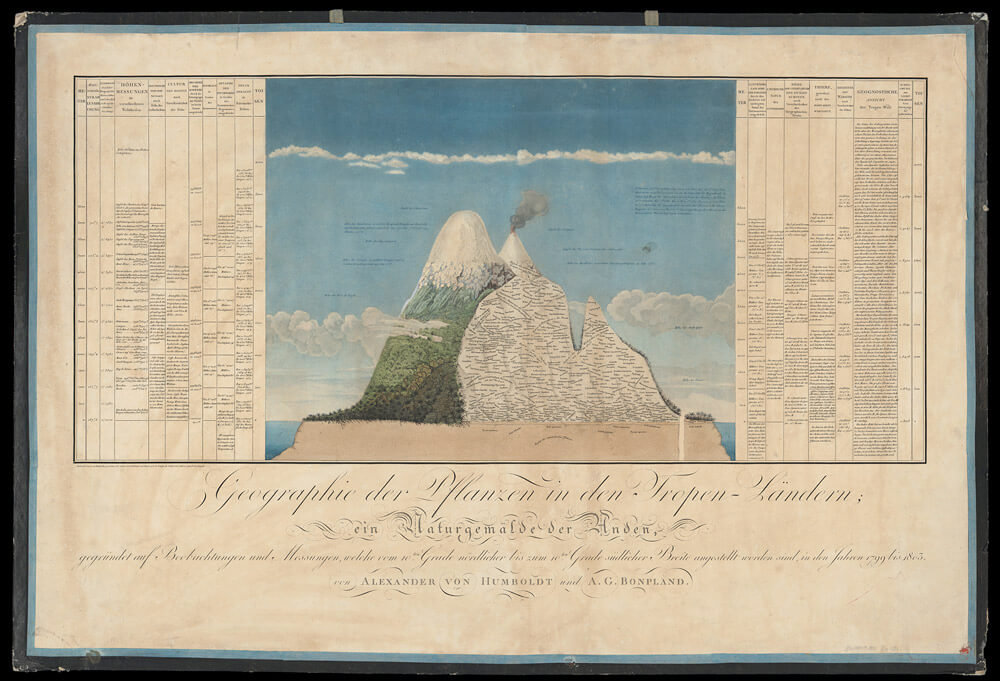

Verslag nummer 92
Toegevoegd op zaterdag 18 april 2026
1.215 woorden
De Uitvinder van de Natuur
Inleiding
Van Andrea Wulf las ik in december 2022 een fijn boek over de Duitse Romantiek, dus toen we deze andere titel bij onze vrienden van Godert Walter zagen liggen, hebben we deze gelijk maar gekocht. Het lag me al een tijdje aan te kijken, maar er waren steeds andere dingen te doen en andere boeken te lezen. Gelukkig kon ik het tussen de bedrijven door toch nog wel uit krijgen.
Alexander von Humboldt kende ik natuurlijk al, niet in de laatste plaats uit die Rebelse Genieën (hoewel zijn broer Wilhelm daar een grotere rol in speelt). Maar ik las een jaar of tien geleden ook Het Meten van de Wereld, waarin hij samen met Gauss de hoofdrol vervult – en ver daarvoor, tijdens m'n studie, las ik zijn verslag van zijn Amerikaanse reis. Maar een werkelijk gedegen biografie had ik nooit onder ogen gehad – en inmiddels weet ik wel veel meer over de negentiende eeuw.
Een gevierd wetenschapper
Het boek kent vijf delen die redelijk de chronologie en biografie van Von Humboldt volgen. Wilhelm en Alexander groeien op als zonen van een well-to-do Pruissische officier. Hoewel ze erg op elkaar zijn gesteld, zijn het wel twee compleet verschillende personen. De twee jaar oudere Wilhelm is meer intellectueel, terwijl Alexander een sterke Wanderlust aan de dag legt – een Wanderlust die met name geïnspireerd lijkt te zijn op de verhalen van James Cook en van Louis de Bougainville en op zijn frequente bezoeken van de Berlijnse botanische tuin (p.39).
Alexander kan eindelijk aan zijn reislust gehoor geven wanneer zijn moeder overlijdt en beide zonen een bescheiden fortuin nalaat. Samen met de botanicus Aimé Bonpland arriveert hij in juli 1799 in Zuid-Amerika, met als doel het stroomgebied van de Orinoco te onderzoeken. De grote hoeveelheden observaties en metingen die hij daar verrichte vormden de basis voor zijn latere carrière als gevierd wetenschapper.
Want dat hij een gevierd wetenschapper was, komt in dit boek duidelijk naar voren. Zo hebben zijn ideeën over de natuur als één groot samengesteld geheel (en de daaraan gekoppelde strijd om het bestaan) zowel de levensfilosofie van Schopenhauer als de evolutietheorie van Darwin geïnspireerd. Dit wordt bijvoorbeeld duidelijk wanneer hij schrijft over de 'krachtmetingen' die hij in de tropische regenwouden telkens weer waarneemt:
Wat Humboldt waarnam was volstrekt geen hof van Eden. De Gouden Eeuw is voorbij, schreef hij. Deze dieren vreesden elkaar en vochten om te overleven. En dat gold niet alleen door dieren: hij merkte ook op met hoeveel kracht klimplanten enorme bomen in het oerwoud wurgden. Hier was het niet de verwoestende hand van de mens, maar de onderlinge strijd om licht en voedsel die de levensduur en groei van planten bepaalde. (p.98)
Schopenhauer wordt door Wulf niet expliciet genoemd, maar de invloed van Von Humboldt op Darwin wordt door haar breed uitgemeten – er is zelf een heel hoofdstuk aan gewijd (hoofdstuk 17). Eén van de boeken die Darwin op de Beagle bij zich had was het zevendelige reisverslag van Von Humboldts Zuid-Amerikaanse reis:
[Darwin] zag [de tropen] door de ogen van Humboldt. Zijn dagboek wemelde van de opmerkingen als 'getroffen door de juistheid van Humboldts waarnemingen' en 'zoals Humboldt opmerkt.' Tijdens de reis met de Beagle was Darwin voortdurend in een soort innerlijke dialoog met Humboldt verwikkeld [...]. Humboldt boeken vormden bijna een mal voor Darwins eigen ervaringen. (pp.281-283)
En iets later:
Het lijdt geen twijfel dat Malthus Darwin voorzag van een theorie waarmee hij 'aan de slag' kon, maar de zaden van deze theorie werden al gezaaid toen Darwin Humbolts werk las. (p.293)

Politieke invloeden
Humboldt onderhoudt contact met allerlei wetenschappers, denkers en politici. Zo correspondeert hij ook met Thomas Jefferson, die hij na zijn reis in Zuid-Amerika en Mexico al had ontmoet – die overigens een beschrijving oplevert die in 2026 ondenkbaar zou zijn:
Net als Humboldt bewoog [Jefferson] zich met gemak van het ene terrein naar het andere. [...] Hij telde traptreden [en] had altijd een lineaal op zak. Nooit leken zijn gedachten stil te staan. Met zo'n veelzijdige geleerde als president werd het Witte Huis algauw een werenschappelijk ontmoetingspunt waar botanie, geografie en verkenning van onbekend gebied favoriete tafelonderwerpen waren. (p.137)
Maar bijvoorbeeld ook de Zuid-Amerikaanse revolutionair Simón Bolívar was onderdeel van de entourage van Humboldt, en kreeg zijn ideeën van een onafhankelijk Venezuela zelfs ingegeven door de gesprekken die ze samen voerden (p.156, pp.190-208).
De spraakwaterval
Na de moeizaam georganiseerde en uitgevoerde reis door Rusland ontpopt Humboldt zich steeds meer als zo'n typische geleerde die meer vertelt dan luistert. Wanneer Darwin hem in januari 1842 ontmoet, valt zijn idool om deze reden eigenlijk van z'n voetstuk:
Darwin was geschokt door Humboldts gedrag. Hoewel hij enkele keren probeerde ertussen te komen, gaf hij het uiteindelijk op. De oude Humboldt was heel opgewerkt en maakte hem een paar 'geweldige complimenten', maar hij praatte gewoon te veel. De stortvloed van woorden hield drie uur aan: het geratel was 'buiten proporties'. (p.304)
Dit buitenproportionele geratel manifesteert zich ook in het laatste werk dat Humboldt produceert: zijn Kosmos. In dit opus magnus probeert hij een beschrijving te geven van het volledige universum – een uitdaging die al een kleine honderd jaar eerder door Diderot en d'Alambert was aangegaan. Ondanks het grote initiële succes, lijkt Humboldt ook hier geen einde aan de materie te kunnen breien: de oorspronkelijke twee delen worden er uiteindelijk vier – het laatste deel posthuum gepubliceerd.
Humboldt sterft op 6 mei 1859 op negenentachtig jarige leeftijd. Zijn laatste woorden waren 'wat verrukkelijk, deze zonnestralen. Ze lijken de aarde naar de hemel te roepen.' (p.348)

Vergetelheid
Het is verbazingwekkend dat een schrijver, denker en wetenschapper die zó populair en geliefd was in z'n tijd heden ten dage nagenoeg vergeten is – terwijl zijn honderdste geboortedag nog 'overal ter wereld werd gevierd' (p.25). Zijn gedachtegoed (met name zijn idee van de natuur als één geheel) heeft de grote filosofieën van de negentiende, en bij extensie van de twintigste eeuw beïnvloed. Zijn vraag naar de relatie van de mens met zijn omgeving, een vraag die voortkwam uit de Duitse Romantiek en de groep rondom Goethe (met wie Humboldt een intense vriendschap onderhield) is een vraag die ons ook vandaag nog bezig houdt.
Waarom is Humboldt zo in de vergetelheid geraakt? Wulfs antwoord op deze vraag is gelegen in het feit dat de holistische benadering van Humboldt niet past binnen de huidige academische praxis en dat de Eerste Wereldoorlog een sterk anti-Duits sentiment veroorzaakte (p.413). Sure, maar dan zouden we ook Goethe niet meer lezen, Nietzsche verwaarlozen of Heidegger verafschuwen (o, er zijn genoeg mensen die dat doen).
Wulf is in ieder geval fan. Haar bewondering voor Humboldt spat van de pagina's en in haar conclusie actualiseert ze Humboldts visie en bijdrage aan ons mensbeeld. Hoewel die waardering tot een zeer lezenswaardig, informatief en interessant boek heeft geleid, zou een iets kritischer houding misschien welkom zijn. Dit manifesteert zich nog het beste in het gegeven dat na de dood van Humboldt er nog vierenzestig pagina's volgen met meer of minder volledige biografieën van George Marsh, Ernst Haeckel en John Muir en op welke manier Humboldt hun werk heeft beïnvloed. Op zich interessant, maar het lijkt erop dat Wulf een beetje hetzelfde euvel heeft als haar idool: dat ze wat moeite heeft te weten wanneer ze moet stoppen.